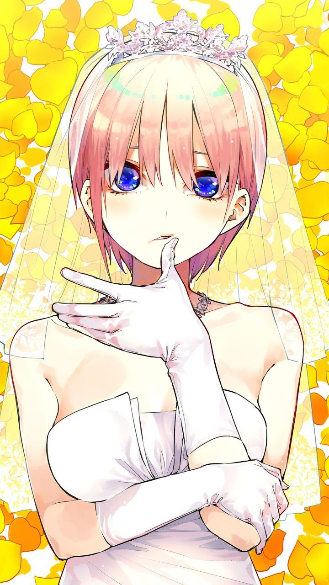
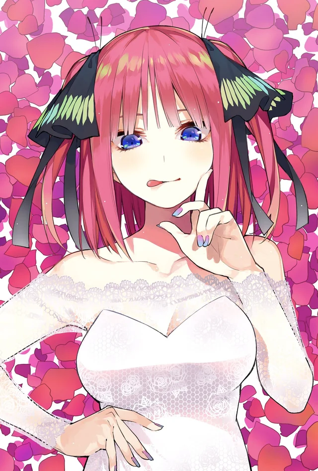
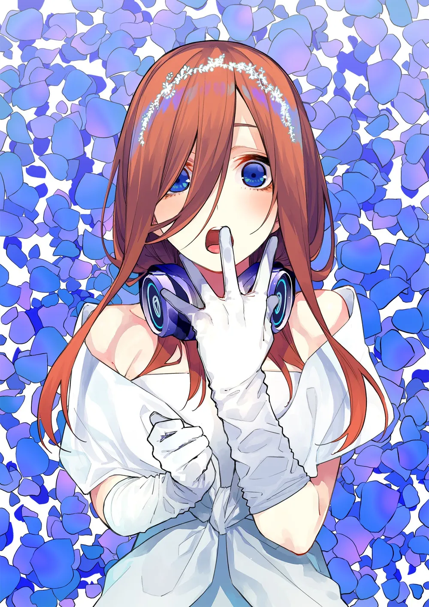
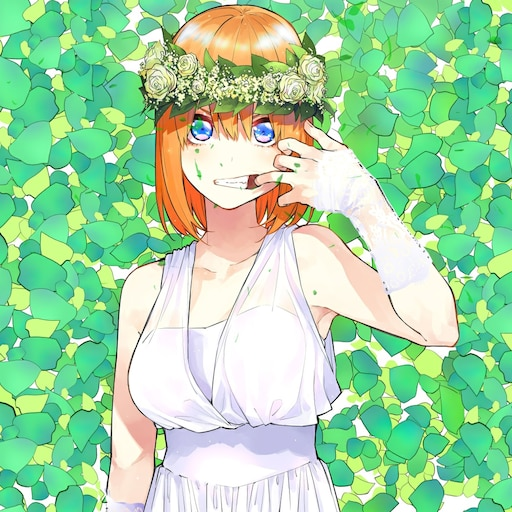
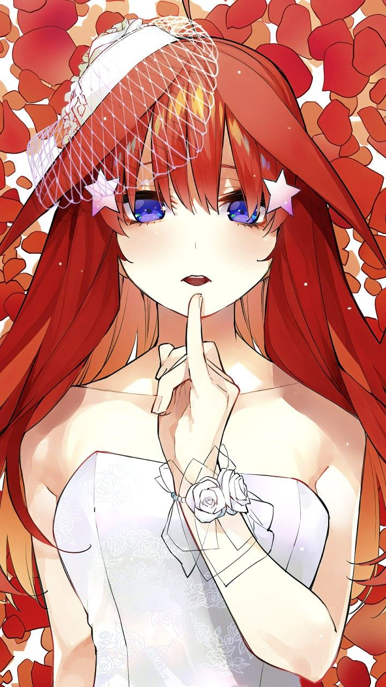
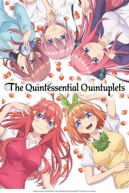
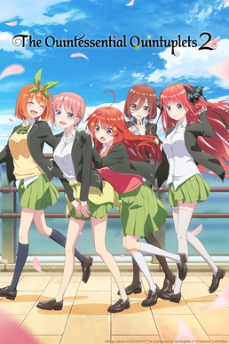
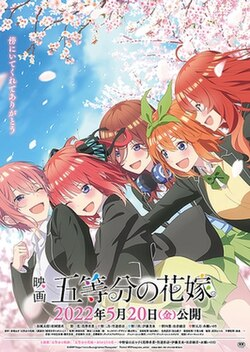

Urutan Lahir
Tinggi
Berat
Ulang Tahun
Tentang
Deskripsi
Kepribadian
Minat & Hobi
Fun Facts
Nakano Quintuplets — Lima Saudari Kembar






Season 1Vol. 01 · Winter 2019
Fuutarou Uesugi ditugaskan menjadi tutor privat bagi lima saudari kembar Nakano. Awal yang penuh konflik dari sebuah kisah cinta yang tak terduga — antara seorang pelajar jenius dan lima gadis dengan kepribadian yang sangat berbeda.

Season 2Vol. 02 · Winter 2021
Hubungan Fuutarou dengan kelima saudari semakin dalam dan kompleks. Perasaan yang selama ini tersembunyi mulai terungkap — membawa cerita menuju babak yang lebih emosional, dramatis, dan penuh kejutan yang menggetarkan hati.

The MovieFilm · 2022
Babak final dari kisah cinta Fuutarou dan kelima saudari Nakano. Semua pertanyaan terjawab, semua perasaan terungkap — sebuah penutup yang mengharukan dan tak terlupakan bagi jutaan penggemar di seluruh dunia.
Tentang
Deskripsi
Kepribadian
Minat & Hobi
Fun Facts